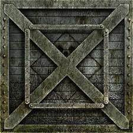
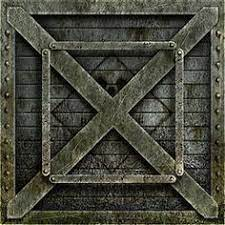
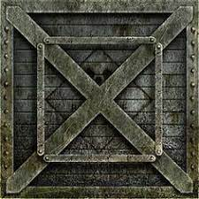

This project is designed to help you visualise the different axis of rotation in the X,Y and Z plane
This project has to be run on live server to see the texture of the Cube.

For personal use only for commercial use contact: emmanuelmukendi474@gmail.com
 
